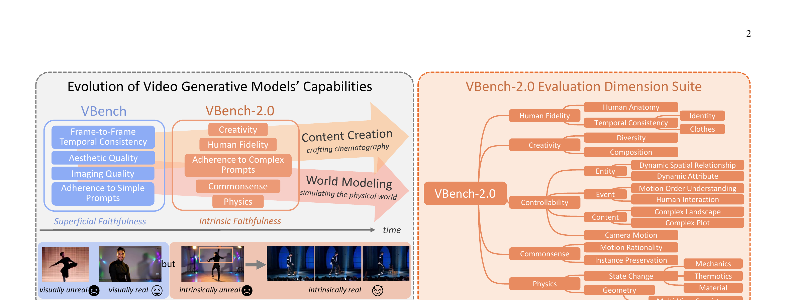

VBench-2.0: Advancing Video Generation Benchmark Suite for Intrinsic Faithfulness
Zheng 等 · 2025 技术报告 · arXiv:2503.21755 v2 · Zotero 5QDCR24N
VBench-2.0 把视频评测从“看起来好”推进到 intrinsic faithfulness：对象、空间、时间、物理和常识是否在整段生成中保持内部一致，而不是只和文本大致对齐。
§1 Introduction：当传统视频指标开始饱和，下一步该测什么
新一代视频模型在清晰度、基本时序一致性和简单 prompt alignment 上快速接近饱和，但“看起来像真的”不等于“内部遵守真实世界原则”。人物可能多出手指，衣物与身份跨帧改变，复杂剧情顺序错误，物体运动违反常识。原 VBench 主要衡量这类 superficial faithfulness 的早期技术质量。
VBench-2.0 转向 intrinsic faithfulness，组织 Human Fidelity、Controllability、Creativity、Physics、Commonsense 等五大维度和细粒度子项。不同维度使用专门数据与 detector，并以大规模 human preference 校准自动分数。它不是用一个指标定义“世界模型”，而是暴露模型能力轮廓。
展开原文 · 核心转向
“beyond superficial faithfulness toward intrinsic faithfulness”
§2 Related Work：从通用质量指标到能力诊断套件
FVD、IS、CLIPScore 把复杂生成压成单值，容易被外观和分布相似性主导；VBench 通过维度化评测改善了可解释性。VideoPhy、Physics-IQ 等进一步专测物理，但覆盖面较窄。VBench-2.0 把物理、常识、人体、复杂提示与创造性纳入统一套件，便于看模型在哪种 intrinsic constraint 上失败。
对 WAM 而言，这仍是生成侧 benchmark：它能检查视频先验是否保留对象、身份、几何和常识，却没有动作条件、接触传感或策略闭环。应把它当作世界表示体检，不是控制能力总榜。
§3 Extrinsic alignment 不等于 intrinsic faithfulness
§4 从能力演进到评测维度

1. 选取能力维度
每个维度对应可观察失败模式。
输入是什么：当前任务提供的原始观测、指令、机器人状态或训练数据。先明确这些输入，才能判断后面的结论是否用了部署时拿不到的信息。
这一步究竟做什么：本步骤执行“选取能力维度”。具体来说，每个维度对应可观察失败模式。 这里处理的只是整条链路中的一个接口：把上一步的结果整理成下一步能够正确读取和继续计算的形式。
输出到哪里：经过本步骤处理、含义更明确的中间结果。这个结果会交给下一步“构造 prompt/样本”继续处理。
为什么不能省略：它把未经处理的原始问题变成后续模块可以计算的输入，是整条链路的起点。
2. 构造 prompt/样本
让模型必须跨帧保持约束。
输入是什么：来自上一步“选取能力维度”的产物：经过本步骤处理、含义更明确的中间结果。本步骤还会按论文设置读取当前条件、时间步或训练信号。
这一步究竟做什么：本步骤执行“构造 prompt/样本”。具体来说，让模型必须跨帧保持约束。 它控制模型究竟看到什么、需要预测什么，避免后续比较因为输入长度或难度不同而失去意义。
输出到哪里：一套固定且可复现的输入条件，后续所有模型都必须在这套条件下生成或行动。这个结果会交给下一步“专项 evaluator 打分”继续处理。
为什么不能省略：它承担上下两步之间的接口；缺少它，前一步产生的信息无法以正确格式或正确含义传到下一步。
3. 专项 evaluator 打分
物理问题不和美学共用同一 judge。
输入是什么：来自上一步“构造 prompt/样本”的产物：一套固定且可复现的输入条件，后续所有模型都必须在这套条件下生成或行动。本步骤还会按论文设置读取当前条件、时间步或训练信号。
这一步究竟做什么：本步骤执行“专项 evaluator 打分”。具体来说，物理问题不和美学共用同一 judge。 它把原本模糊的‘看起来对不对’拆成可重复计算或人工核对的判断，从而让不同模型能在同一标准下比较。
输出到哪里：一组诊断数值、分类结果或评测分数；它告诉后续模块当前结果哪里好、哪里需要修正。这个结果会交给下一步“人类一致性验证”继续处理。
为什么不能省略：没有统一诊断或评分，后续模块无法知道哪里出错，也无法公平比较两个模型是否真的进步。
4. 人类一致性验证
检查自动指标是否真正捕捉异常。
输入是什么：来自上一步“专项 evaluator 打分”的产物：一组诊断数值、分类结果或评测分数；它告诉后续模块当前结果哪里好、哪里需要修正。本步骤还会按论文设置读取当前条件、时间步或训练信号。
这一步究竟做什么：本步骤执行“人类一致性验证”。具体来说，检查自动指标是否真正捕捉异常。 它把原本模糊的‘看起来对不对’拆成可重复计算或人工核对的判断，从而让不同模型能在同一标准下比较。
输出到哪里：一组诊断数值、分类结果或评测分数；它告诉后续模块当前结果哪里好、哪里需要修正。这是图中这条链路的最终产物，随后会进入真实执行、模型更新或指标评测。
为什么不能省略：没有统一诊断或评分，后续模块无法知道哪里出错，也无法公平比较两个模型是否真的进步。
§5 为什么不应只看总分
总分会掩盖 trade-off：某模型可能语义强却物理弱。WAM 研究应报告维度向量，并把动作条件、长时漂移和接触任务单独切片。
§6 对 WAM 的用法
对象持久性、状态连续、异常实体和基础物理适合评估 WAM rollout；但 VBench-2.0 没有验证动作是否可从视频恢复，因此仍需 WorldSimBench/IDM 指标。
§7 局限
VQA judge 受基础模型偏差影响；短 clip 内的“看起来合理”也未必对应真实动力学参数。它测生成内在忠实度，不等于控制成功。
§8 使用与复现：不要让总分掩盖能力退化
最小可信使用清单
- 固定 sampling config，报告每维置信区间而非单次结果。
- 同时给出原 VBench 与 VBench-2.0，区分基础画质和内在忠实。
- 按 human、physics、commonsense、control prompt 单独诊断。
- 记录 detector 版本并人工复核模型排名接近的维度。
- 机器人论文另加 action-conditioned 与 closed-loop 评测。
VBench-2.0 的价值是把“更像真的”拆成多个不可互相替代的约束；总分只是索引，能力雷达才是结论。